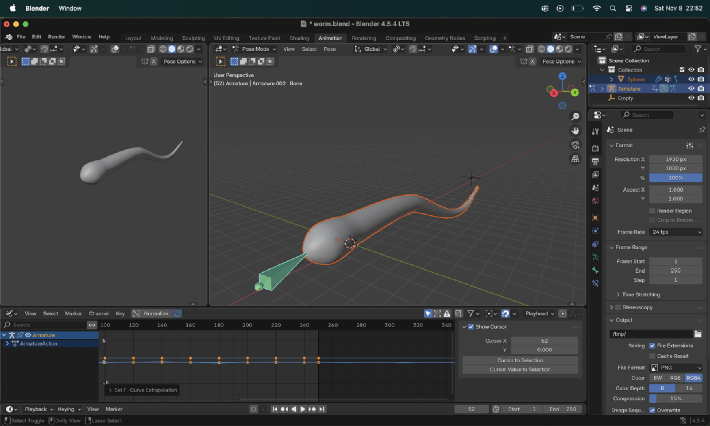
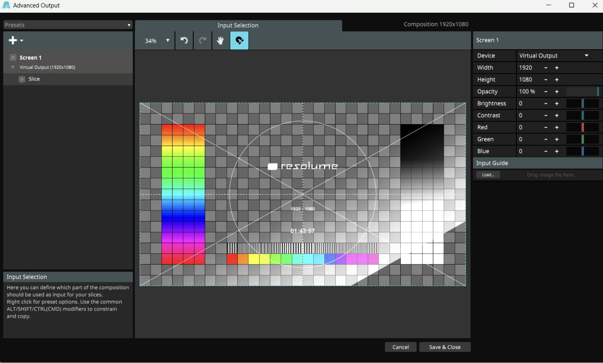

Sprint 2
Blender Exploration & Projection Mapping
In the second sprint, I went deeper into Blender, increasing the complexity of my 3D animations and experimenting with more organic forms.
At the same time, I started learning Resolume, a software widely used for projection mapping and VJ performances.
The goal of this sprint was to understand how digital animations behave when projected onto real-world surfaces, using a beamer and a physical projection setup.

